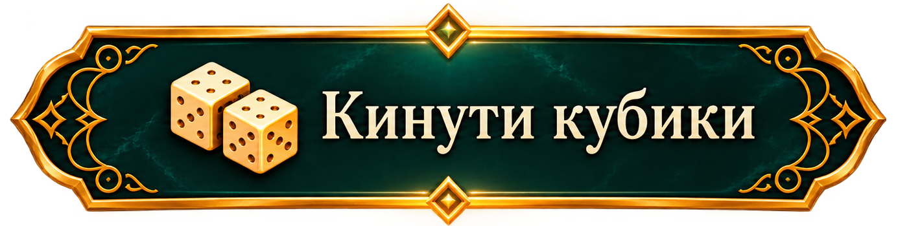

ДУМАЙ. ВІДЧУВАЙ. ДІЙ
Числовий кубик: 1
Кубик знаків: +

Твій шлях —
1
крок
+
Завантаження кубиків…
Для кидка кубиків увімкніть JavaScript.


 Твій шлях — 1 крок
Твій шлях — 1 крок
Твій шлях — 1 крок
Твій шлях — 1 крок